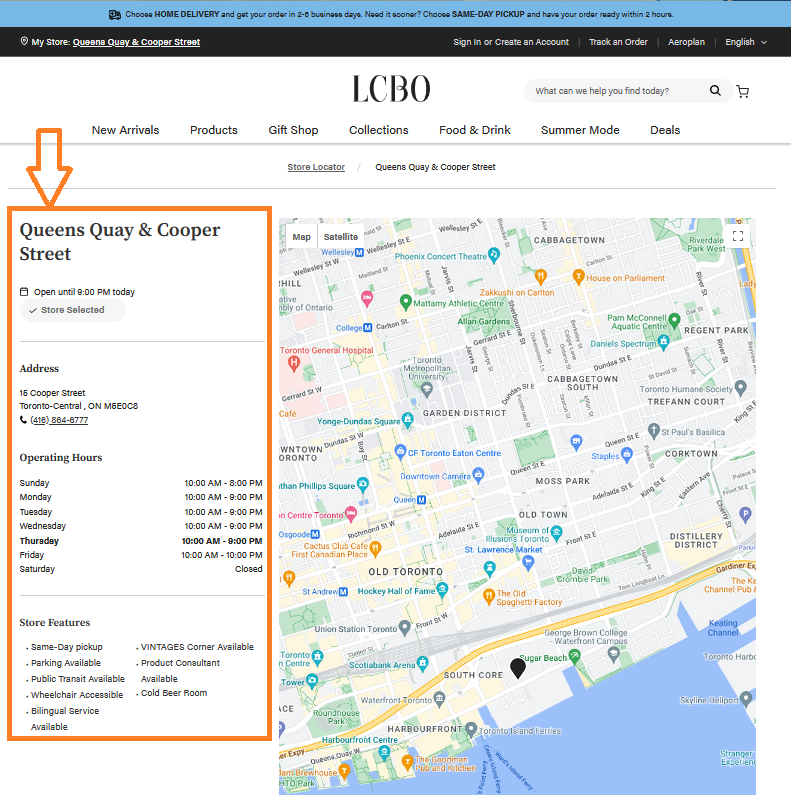
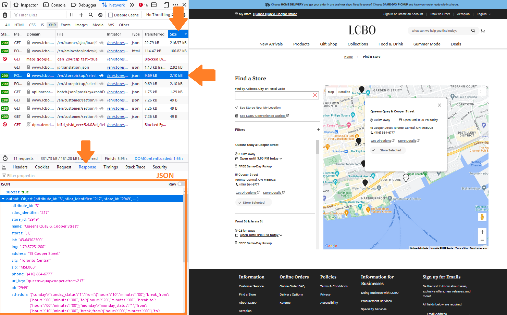
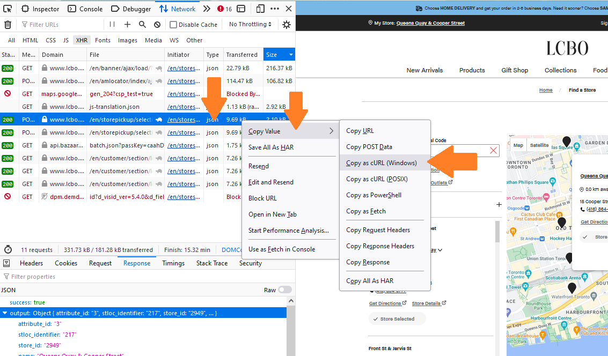
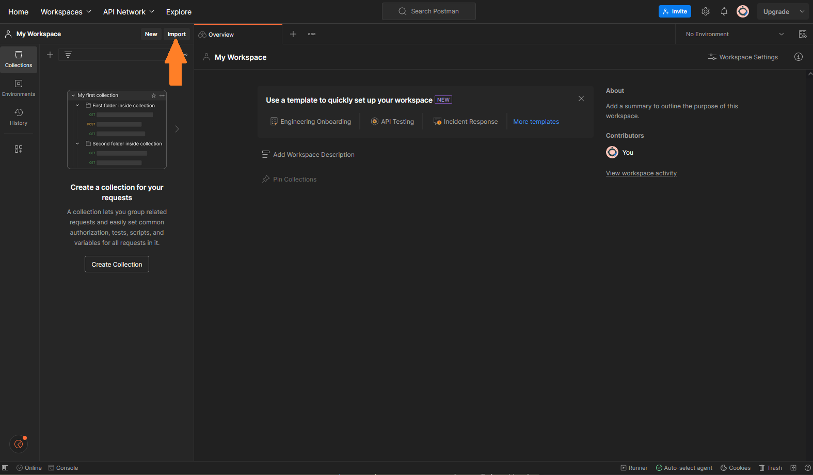
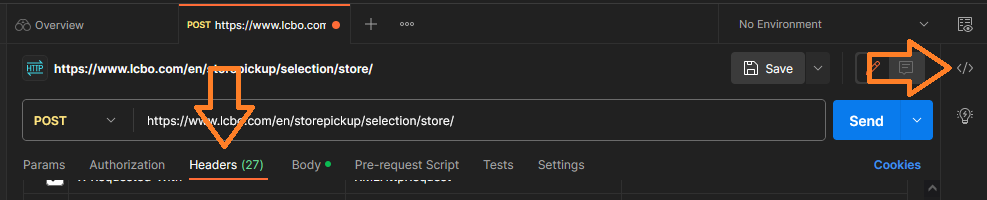

What is the LCBO?
In Canada, the government of Ontario owns a Crown corporation called the Liquor Control Board of Ontario (LCBO). The LCBO distributes practically all alcoholic drinks in the province of Ontario and is one of the largest purchasers of alcohol in the world1.
What is the data
The LCBO website publishes the live inventory of every product available across their nearly 700 retail stores. I asked a retail operator how accurate the website’s inventory is and they said “well, our staff use it to know what we have.”
There are three sets of data I am interested in: product descriptions, product inventory, and store information. Below, I will show how I made a simple scraping function to scrape store information. My next blog posts will be on product descriptions and inventory, which require a few more steps.
Data Product: Store Information
Part 1: Finding the data
Each LCBO store location has a webpage containing its details such as hours, address, and phone number:

https://www.lcbo.com/en/stores/queens-quay-cooper-street-217
When clicking the above link, we can monitor the traffic of information arriving to your browser and search for the store information. Often times, its sent as a JSON file.
To find the JSON, do the following:
- Right-Click on the page
- Click Inspect
- Select the “Network” tab
- Select the “XHR” sub-tab (on Chrome it is “Fetch/XHR”)
- Reload the page and wait.
You’ll see a table being filled as data is being sent to your browser.
- Sort the table by file size (optional)
- Click on the “Response” sub-tab located at the bottom.
Here’s how it looks on my screen so far.

Click on a table row JSON file type. You will see the contents of the JSON file beneath the “Response” sub-tab. Keep clicking until you find the store information.
Congratulations! You’ve found the data. It contains the store address, longitude and latitude, city, area (zip) code, phone number, URL, store hours, and store ID.
Now lets grab it.
Part 2: Requesting the data
cURL is a command line tool used to transfer data. It was made by a dev who wanted to automatically fetch currency exchange rates! We use the cURL command by…
- Right-clicking on the row with the data product
- Select “Copy Value”
- Select “Copy as cURL (Windows)” or (POSIX)

The cURL command is now on your clipboard. If you paste the cURL command into an editor, you’ll find a wall of intimidating text. I found Postman incredibly useful to parse the text. Make a free account, agree to things, and you’ll arrive at a workspace. Click on “Import” in the top-left (see note below).

A little window will pop up. Paste the copied cURL command and Postman will automatically setup a workspace. Click the blue button “Send” to execute the cURL command. The JSON is retrieved and displayed at the bottom. Next, select the “Header” tab and then select the code snippet button “</>” on the very right margin. See image below.

Each row in the “Header” tab is an argument in the cURL command. If you uncheck an option, the cURL command will update on the right. Most of these arguments are not important for us. You can uncheck them and click “Send” again to see whether the JSON product is delivered. I found the bare minimum needed is “Content-type” and “X-Requested-With”. So, we should include them.
Looking at the cURL command (see my reduced version below), you’ll find an argument that requests the specific store corresponding to “Queen’s Quay”.
curl --location 'https://www.lcbo.com/en/storepickup/selection/store/' \
--header 'Accept-Encoding: gzip, deflate, br' \
--header 'Content-Type: application/x-www-form-urlencoded; charset=UTF-8' \
--header 'X-Requested-With: XMLHttpRequest' \
--data 'value=217&st_loc_flag=true'Copy your cURL command and paste it into a notepad/editor. Change the value from 217 to 218. Copy the new command, click “Import” again in Postman, paste the command, and click “Send”. You’ll obtain a different store location’s details corresponding to 218.
Now we know what to change to start collecting all store information.
Part 3: Collecting all the data
Our next goal is to write a bash script that will loop cURL command for all values. My script is below. To test this, you’ll need to save it as a file with a “.sh” file tag (e.g., scriptname.sh) and access to a bash terminal. If you’re using a linux or mac then just pop a terminal open, go to the folder with your script, and type the following:
chmod +x scriptname.sh
./scriptname.shThere are a lot of solutions for Windows systems. Since Ubuntu was my primary OS for a while, I prefer just installing WSL (or WSL2).
#!/bin/bash
for STORE_ID in {1..800}
do
curl --location 'https://www.lcbo.com/en/storepickup/selection/store/' \
--header 'content-type: application/x-www-form-urlencoded; charset=UTF-8' \
--header 'x-newrelic-id: VwQHU1dQCRAJU1NUAgMEUFQ=' \
--header 'x-requested-with: XMLHttpRequest' \
--data 'value='$STORE_ID'&st_loc_flag=true' \
--output 'json/stores/store_'$STORE_ID'.json'
sleep 10
doneHere are explanations for the bash script above.
- Instructs the operating system we are using bash.
#!/bin/bash- A for loop where the variable STORE_ID takes values between 1 and 800. After some trial and error, I did not find successful returns above 800. This number is consistent with there being nearly 700 LCBO stores.
for STORE_ID in {1..800}
do
...
done- I use the for loop variable here to specify the store ID. Note, if there is no data for the store ID then the return is a JSON containing {“success”: false}.
--data 'value='$STORE_ID'&st_loc_flag=true'- This argument stores the output as a file with the filename in quotations.
--output 'json/stores/store_'$STORE_ID'.json'- This is incredibly important. This is a sleep command of 10 seconds. If you do not have a delay, the for loop will send 800 requests nearly instantaneously. This can place tremendous load on the servers and cause delays or crashes for customers using the website. What will likely happen is that your IP address will be temporarily banned after the 50th or so request. In my opinion, you deserve this ban. We do not want to harass freely accessible websites!
sleep 10Always scrape gently in testing and final production. If you don’t, they can easily make scraping much harder and more annoying.
Next Steps
Check out the next posts below where I collect the remaining data manually and with my scraper bot.
- Scraping LCBO Data (Part 2: Product Inventory): link
- Scraping LCBO Data (Part 3: Product Descriptions) : link
- Making my own scraper bot! link
Thanks for reading!
Footnotes
A little known fact about Ontario is that it is full of monopolistic business practices.↩︎
Citation
@online{ro2023,
author = {Ro, Stephen},
title = {Scraping {LCBO} {Data} {(Part} 1: {Store} {Information)}},
date = {2023-06-01},
url = {https://royourboat.github.io/posts/2023-06-01-lcbo-scraper/},
langid = {en}
}